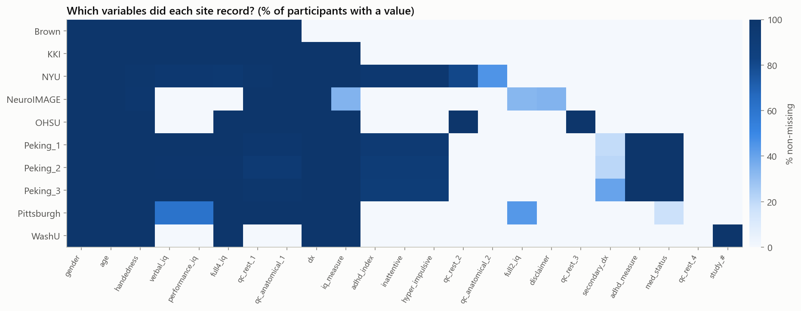
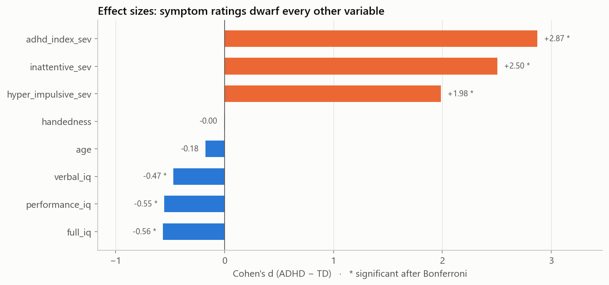
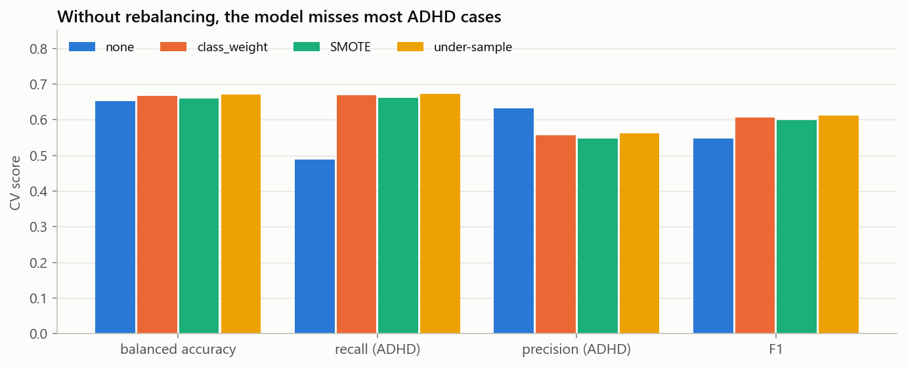
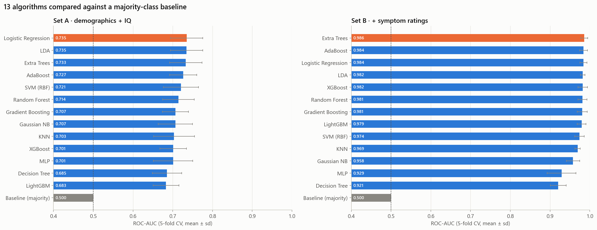
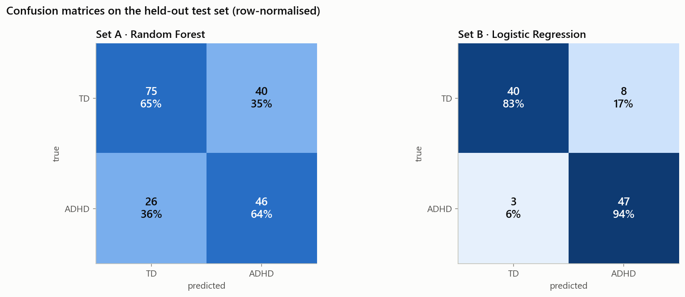
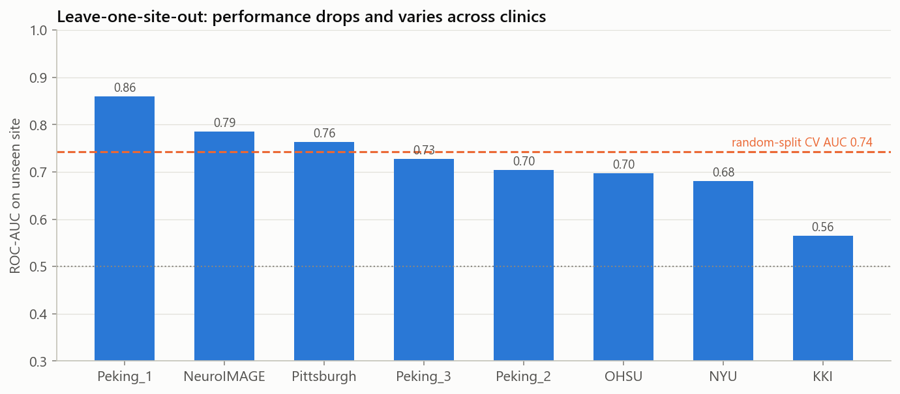
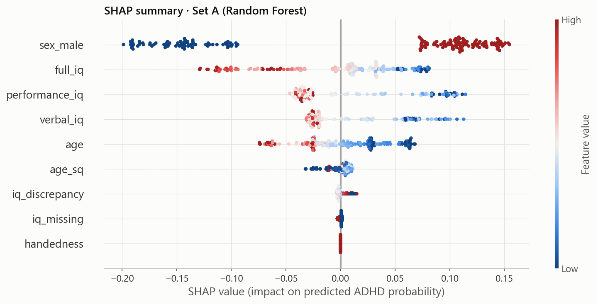
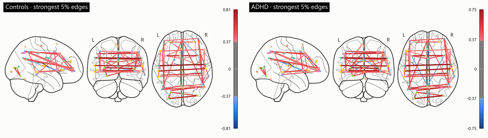

ADHD impacts 5% to 7% of children worldwide, impairing executive function, academic attainment, and emotional regulation.
Standard assessments rely on parent/teacher interviews and clinician variance. Waitlists exceed 12–18 months in community healthcare.
High-IQ children and females frequently mask overt hyperactivity, exhibiting subtle inattention and suffering from delayed diagnosis.
Multicenter cohorts exhibit massive clinic prevalence shifts (0% to 58%), causing naive AI models to memorize hospital names instead of pathology.
Harmonized 10 clinical centers, pruned 101 duplicate records, normalized Conners & ADHD-RS to [0,1], and fixed sentinel NaNs.
Evaluated Cohen's d effect sizes, Welch's t-tests, Mann-Whitney U, and VIFs across demographic and cognitive markers.
Trained and tuned 13 ML models via 5-fold CV, randomized search, voting/stacking ensembles, and Youden thresholding.
Conducted Leave-One-Site-Out (LOSO) checks, audited 0.70 site confounder, and uncovered ethical gender sensitivity disparity.
Decomposed black-box decisions with SHAP beeswarm/force plots, uncovering and fixing the NYU handedness artifact.
Extracted fMRI connectomes with Nilearn (MSDL & BASC) and built an interactive 3D WebGL web app with live in-browser inference.








Three.js WebGL canvas rendering 48 anatomical nodes with traveling synaptic BOLD pulses responsive to cursor movement.
Chart.js multi-metric benchmark explorer: toggle ROC-AUC, Balanced Accuracy, F1-Score, Sensitivity, and Precision.
Executes real-time logistic regression inference in the browser with 5 clinical presets (Control, Combined, Inattentive, High-IQ, Reset).
Dynamic log-odds attribution chart showing exact positive (ADHD) and negative (TD) contributions with sign tags.
Pure static web bundle with zero server dependencies, instant edge deployment, and 100% client-side execution.
Features interactive HTML exports for all 6 notebooks, .ipynb downloads, and copyable repository structure.
NeuroADHD Multi-Center Clinical Benchmark Study